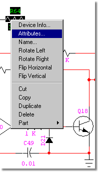
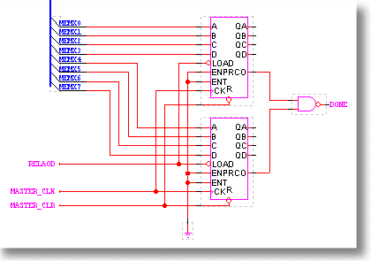
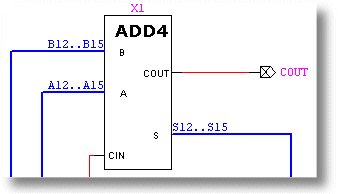

Here's the Complete, Unabridged List of DesignWorks Schematic Capture Features
Version 3.x Users -Click here for a summary of changes in version 4
User Interface
- Dockable toolbars give instant access to schematic editing functions and status information.
- Modeless operation lets you perform most schematic operations like part placement and repositioning, wire editing and selection without using a single menu or typed command.
- Context-sensitive menus accessed through the right mouse button
- Single key shortcuts for commonly used operations.
- Multiple window environment allows you to have any number of designs, pages and subcircuit levels open simultaneously, with full copy and paste support between them.
Standard Libraries
Extensive Symbol Libraries with over 13,000 parts in ANSI and IEEE format. The list includes all 5400, 7400, 7500, 4000, and ECL families, plus an extensive collection of processors, memories, interface parts, discretes and others. Libraries include full package assignment data for assignable parts. Floating parts palette allows quick selection of devices at any time.
DesignWorks is shipped with an extensive set of over 12,000 device symbols. Digital components are provided in Compact, ANSI (rectangular) and IEEE formats. Gate devices are provided in monolith (i.e. one package = one symbol) and with DeMorgan equivalents. All digital devices have full gate packaging information.
Library Creation and Editing
- Integrated Device Symbol Editor allows you to create custom symbols for devices or hierarchical blocks using standard drawing tools.
- A powerful Auto-Create function will generate a standard rectangular symbol from your pin list in seconds.
- Create and edit complex parts with the on-line part editor
- Quickly modify an existing part and save it as a new part
Schematic Editing
Click here for more details...
- Schematic editing tools - Cut, Copy, Paste and Duplicate. Drag any collection of device symbols with full rubber-banding.
- Automatic page references on inter-page connectors.
- Full bussing with automatic pin annotation.
- Add an unlimited number of user-named properties
- Quick symbol library access with preview
- Multilevel Undo/Redo commands
- Nudge any selected group of items
- Flip and rotate any symbol
- Wire rubberbanding maintains orthogonal routing
- Supports you user-definable off-page references, title blocks and borders
- Colors can be set for all objects
- Extensive zoom capabilities, define a zoom rectangle, best fit
- View parts, nets etc. on selected pages in a convenient table
- Incorporate TrueType fonts for all type of text
- Quickly create custom title blocks and drawing borders
- Output black and white or color printouts to Windows supported printers
- Sheet Size Wizard - Spread printout across multiple pages
- Automatic gate packaging
- Custom sheet and border settings
- Attribute Operations - DesignWorks allows text attributes to be associated with any device, signal or pin in a design, and with the design itself.
- Spreadsheet-style Design Browser
- Templates
Hierarchical Design
- Hierarchical Design with unlimited levels is fully supported. Any symbol on a schematic can contain another schematic of arbitrary size. Blocks can be nested to any desired depth, limited only by available memory. Any number of hierarchical blocks can be open for editing at any time. To support a variety of applications, two hierarchical modes are supported: Pure Mode is designed for use in VLSI design and other applications requiring large circuit sizes. In this mode, all instances of a circuit block are identical and editing the internals of one block immediately updates all similar blocks. Interactive simulation is not available in pure hierarchy mode since separate simulation data is not available for the various instances. Physical Mode is intended for use with the DesignWorks simulator or for any designs requiring physical design data (i.e. PCB package names and pin numbers) which may be different among the various instances of an internal circuit.
- Automatically create ports on a hierarchical block or underlying schematic
- Hierarchical structure allows you to attach sub-circuits to a part
- Associate a part hierarchically with a multipage schematic
- Control hierarchical part descent on an instance basis
DesignWorks provides a number of powerful operations for working with device or hierarchical block symbols and internal circuit definitions. Hierarchy Mode - Three hierarchy modes are available to accommodate different design requirements. "Flat" mode provides the simplest possible structure for smaller designs. "Pure" mode implements a pure hierarchical structure, i.e. each part type is defined only once and all instances of a type are identical. "Physical" mode allows full hierarchical operation, but allows separate attribute data to be associated with each physical instance of a part.
Hierarchy Operations - Hierarchical designs can be created "top-down" or "bottom-up". Attach and Detach commands allow separately created designs to be merged into a single hierarchy, or vice-versa. Internal circuit definitions can be saved with a part in a library or as a separate circuit file. Part definitions can be saved from a schematic sheet to a library. Devices in a schematic can be updated from their original library or from any selected new source.
Netlisting and Report Generation
DesignWorks includes a powerful Custom Report Generator tool for netlist and text report generation. The report format is driven by a "form file" which contains formatting commands and constant text. Form file features allow you to control: Overall report structure, e.g. netlist formats by signal or by device, listings by device for bills of materials, etc. Design, device, signal and pin attributes to be included. Selection of devices or signals to include in the report, by name or attribute value. Selection of attribute fields to be used as sources for power and ground connections. Sorting and merging of lines within the file. Format of each pin connection entry, each line and each page. Hierarchy format, including flattened and hierarchical netlists. Error checking, including checking for missing attribute fields. The package includes 20 or more form files for standard industry formats. These can be used as-is or used as a guide for creating your own formats.
- The Integrated Report Tool can generate standard or customized netlists and reports showing any attribute fields. These facilities make DesignWorks an ideal front-end for your other design tools, including simulation, SPICE, PCB layout (OrCAD, PCAD, PADS, WinBoard, FutureNet and many others), FPGA design, and RF design.
- Design Rule Checker performs all of the checks to verify netlist
- Bill of Materials generator supports a user-definable format
DXF and Graphics Export
DesignWorks can save diagrams in the standard WMF (Windows Metafile) and DXF (AutoCAD) graphics formats. This capability allows you to pass graphics to other programs for plotting, enhancement, or incorporation into other documentation.
- WMF is a standard format under Windows for representing graphics objects such as lines, circles, text, etc. This format can be read by many Windows-based graphics and word processing packages.
- DXF is a format developed by AutoDesk for use with their AutoCAD series of general CAD packages. In addition to AutoCAD, most general drafting packages can read and write DXF.
Searching and Error Checking
The Find tool allows you to interactively locate devices, pins or signals by name, attribute value, error condition or other characteristics. The Find tool is completely scriptable, so you can customize it to do your own searches and analyses.
The Report generator tool, in addition to generating netlists and bills of materials, can be used to perform various types of error checking and analysis. This could include checking compatibility of connections, correctly formatted attribute fields, required design information, etc.
Back Annotation
- Import/export property information from ASCII files
- Update Properties utility
- Back-annotation
Two back annotation tools are included with the DesignWorks/Schematic package. The PCB Back Annotation tool allows device package assignments to be automatically updated from a "was-is" text file created by an external system. Formats supported include Cadnetix (SCICARDS), Douglas, Racal-Redac RINF and XCAD. Pin and gate swaps, and component renaming are supported in flat or hierarchical designs. A general attribute back annotation tool called "Updater" is also included. This tool reads a simple tab-separated text file format and will update arbitrary device, signal or pin attribute fields throughout a design. This can be used as a general mechanism for applying user-supplied part numbers, simulation information or other data from a text database.
System Compatibility and Environment
- The DesignWorks Environment allows optional simulation and other design tools to be installed at any time and instantly become an integrated part of your design system. A number of powerful tools are provided with the package, including netlist generation, device symbol editing, design error checking, design-to-library and library-to-design conversion and others.
- Delivers optimal, 32 bit performance under Windows XP, 2000, NT4 and 98.
What would you like to do?
|